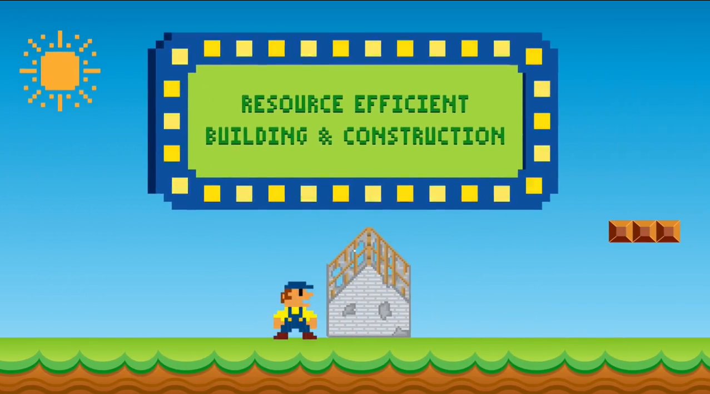
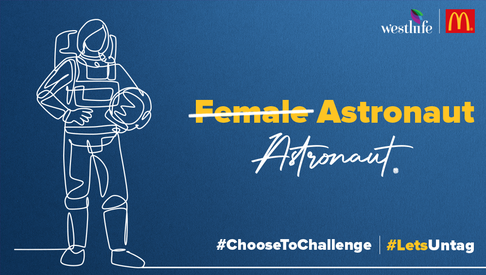

Content Creation – From Ideation to Execution!
Content Piece 1 - Eco MarEU

IDEA
Conceptualization and Script:
WHAT THE CLIENT WANTED?
Climate change is at the heart of the EU, and it is making leaps in all directions to mitigate its impact. Demonstrate the EU's environmental strides and its collaborative efforts with India to combat climate change!
THE PLAN OF ACTION!
- Create an informative and entertaining video with nostalgic elements for all ages
- Highlight specific actions by the EU and India for climate neutrality, not just general climate information
- Create an informative and entertaining video with nostalgic elements for all ages
- Highlight specific actions by the EU and India for climate neutrality, not just general climate information
- Licensing: Adhering to Nintendo's rules for using Mario as a licensed asset
- Precision: Overcoming challenges in 2D animation, ensuring smooth transitions and nostalgic appeal
- Details & Partnerships: Simplifying complex climate partnerships between the EU and India in our storytelling
- Viewers retain 95% of a message when they watch it in a video. Selected 2-D animation for its adaptability in breaking down complex EU-India partnership information, capitalizing on high message retention rates in video format
- Confirmed broad age appeal of gaming, particularly Mario, through extensive surveys among diverse groups prior to video execution
- Integrated 5 climate partnerships into 2-minute video, aligning with Mario game dynamics for storytelling coherence
- Navigated Nintendo licensing intricacies, utilized Shutterstock frames for creative freedom and legal compliance
- Selected Mario-esque icons for partnership representation, ensuring visual coherence and connection with the game's aesthetics
- Curated precise sounds for each storyboard element, enhancing viewer immersion and overall video impact
- We designed our character to embody the EU, crafting his costume in EU flag colors. After brainstorming, we coined "MarEU" to avoid infringement while maintaining theme coherence. The fantastic plug-in emerged: Mario + EU = MarEU!
WHAT WE ACHIEVED!
- Attained a highly engaged audience of mixed age groups as it garnered 80,000+ reach, and more than 65,000 views
- Featured by EEAS (European External Action Services) on their Earth Day release
- Applauded by all the other Member States, and governing bodies within the EU for its uniqueness and relatable content, and covering all the points that prove climate action is extremely crucial to the EU
- Major partners and industry leaders shared the video including UN Biodiversity, Namami Gange, EU at United Nation, Directorate General EU Environment and more!
Content Piece 2 - #LetsUntag

Objective:
IDEA
Ignite with Thought Leadership:
WHAT THE CLIENT WANTED?
Craft a compelling LinkedIn campaign for International Women's Day that not only captures attention but also distinguishes itself in the crowded digital landscape.
THE PLAN OF ACTION!
- Eradicate gender bias in women's job titles. Raise awareness on inclusivity and gender sensitivity, removing unintentional biases from women's achievements.
- The campaign actively addressed bias by removing gender-specific terms associated with professions. Terms like "Female MD" were replaced with "MD" and "She-E-O" with "CEO" to promote gender neutrality.
- The campaign strategy was tailored to suit the platform and its audience, making LinkedIn the perfect choice.
- Commenced with videos and blogs featuring company leaders
- Awareness series promoting gender-neutral terms.
- Employee participation video content
- Smita Jatia, Vice Chairperson, sparks the fire with '#LetsUntag' article, rallying all to dismantle gender bias in professions
- Creative series flips the script on biased terms, championing gender-neutral titles, fueled by Westlife Development Limited's vision
- Seamlessly merge with the Chief Safety Officer drive (ongoing campaign), led by Shaikh Shabina (Employee at McDonald's, Mumbai), echoing the call for gender-neutral designations
- Westlife Development Limited roars as employees thunder forth, galvanizing a gender-neutral revolution through electrifying videos
WHAT WE ACHIEVED!
- Created awareness with 69,684 impressions
- Garnered a total of 6,816 video views for 10 videos
- Earned 1,146 page views during the campaign was running, indicating an increase of 32%
- Secured an increase of 31% in the number of reach
- Earned a 42% rise in the number of followers, the number of new followers remained to be 84
- Recognised among the best campaigns by Adgully, MediaInfoline, and MediaNews4U on Women’s Day